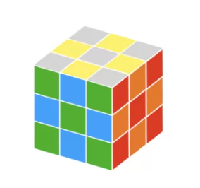
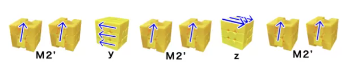
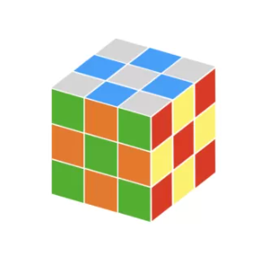
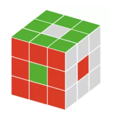
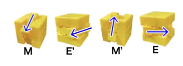
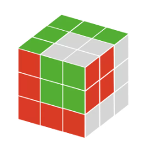
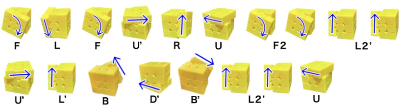
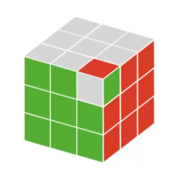

チェッカー
作り方はいちばん簡単ですが、とても綺麗な模様です。市松模様とも呼ばれます。
作り方はここをタップ
スーパーチェッカー
アドバンスドチェッカーとチェッカーを組み合わせた模様です。
作り方はここをタップ

ドーナツ
作り方が最も簡単な模様のひとつです。さまざまな国の国旗を作ることができます。
作り方はここをタップ
キューブインキューブ
2×2のキューブが埋まっているように見える模様です。
作り方はここをタップ
ミニキューブインキューブ
柔軟性のあるキューブでは、コーナーパーツをねじった方が簡単に作れてしまいます。
